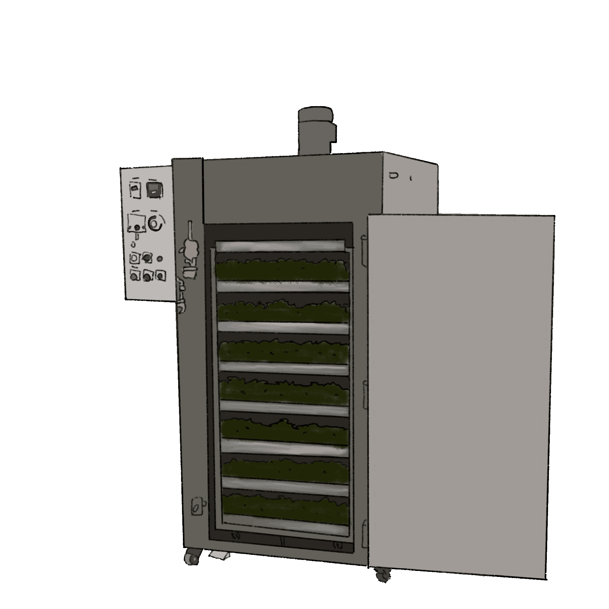
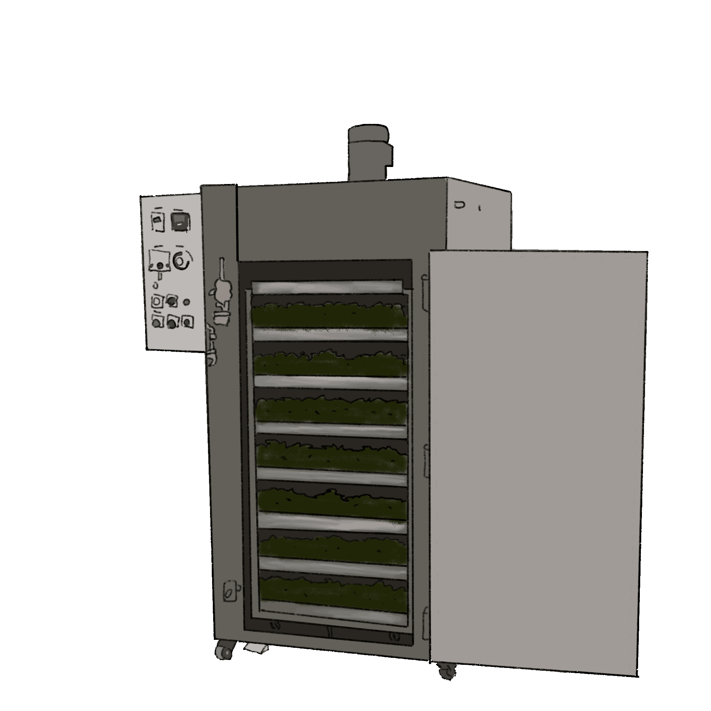

採菁是摘斷葉間幼梗的中部。採摘標準視老嫩程度而定，一般為一心兩葉至三葉，茶菁的完整度關係到茶葉製造的品質。
萎凋可分為日光（熱風）萎凋及室內萎凋，日光（熱風）萎凋室藉由熱能使茶葉水分消散，日光萎凋後移入室內進行室內萎凋繼續使茶葉水分消散。萎凋過程可使茶葉重量、體積、硬度降低，促進化學反應產生特殊香氣及滋味。
製作部分發酵茶時，初期藉由翻動，使茶菁水分重新分配，達到減低茶梗水分的目的。後續藉由攪拌使茶葉細胞摩擦破損，增加多元酚氧化酶及兒茶素作用，進而控制茶葉發酵的程度。
因揉捻後的茶葉發酵程度不足，所以需將茶葉堆疊進行補足發酵，使多元酚氧化酶與兒茶素類充分反應。
藉由熱破壞茶葉中酵素活性，並促使茶葉水分消散、葉片軟化，利於後續揉捻成形，並去除茶葉不良的菁味及穩定茶菁色澤及香氣。
使茶葉捲曲形成條狀，並破壞茶葉的細胞組織，使茶葉的汁液流出附著於表面，增加沖泡時的風味；在揉捻中使茶葉細胞劇烈破壞，促使多元酚氧化酶及兒茶素反應。
以熱風去除茶葉中的水分，使其含水量降至5%以下，延長保存期限，並可停止發酵作用及其他生化反應，使品質固定。此外加熱過程亦可引起若干化學成分的變化促使茶葉香氣形成。茶葉烘乾後可使形狀固定，方便包裝及運輸。
烘焙具有去除水分效果，有效延長茶葉貯藏壽命，並改善粗製茶普遍帶有之臭味和不良雜味，增加茶葉的特殊香氣及特色性。
是否你曾經也有以下困擾：
「不同品種的茶到底差在哪 ?」
「為什麼同樣顏色的茶湯喝起來風味卻不同呢 ?」